Composites Manufacturing
Mechanical Engineering Internship — Levanta Technologies · Summer 2026
{kind=link}
{kind=link}
The finished full-length carbon bottom skin beside the mold it came off, and the trimmed part test-fitted to the hull the same day.
Overview
During my internship at Levanta Technologies I spent nine weeks on production composites for a maritime drone. A composite part starts two generations upstream: a plug (the positive shape, surfaced until it’s worth copying), then a mold cast over it, then the part — and I worked every stage of that chain. Over the summer I:
- Prepped and sealed foam plugs, taped them for release, and faired seams
- Laid tooling gelcoat and built chopped-strand fiberglass molds in box forms
- Wet-laid carbon into the finished molds
- Vacuum-bagged parts, pleating the film into three-dimensional shapes
- Demolded and trimmed cured parts
- Helped take the vehicle’s full-length carbon bottom skin from a primed plug to a hull-fitted part in about eight days
Goals & Requirements
- Build the tooling first: plug → mold → part — no part exists until two generations of tooling do
- Defect-free mold surfaces — any flaw in the plug is copied into the mold and then into every part off it
- Fully consolidated laminates — no trapped air in corners, no bag film bridging concave features
- The full-length bottom skin laid up in one shot, inside a single working pot life
- Trimmed parts that fit the vehicle
Foil and strut parts
On the smaller foil and strut parts I worked the full chain. Each starts as a machined foam plug, sealed and taped for release, with a female mold built over it in a box form: tooling gelcoat first, then chopped-strand mat wetted out and rolled to chase air out of every corner and radius. Trapped air there becomes a void in the mold face, which becomes a bump on every part off that tool.
{kind=link}
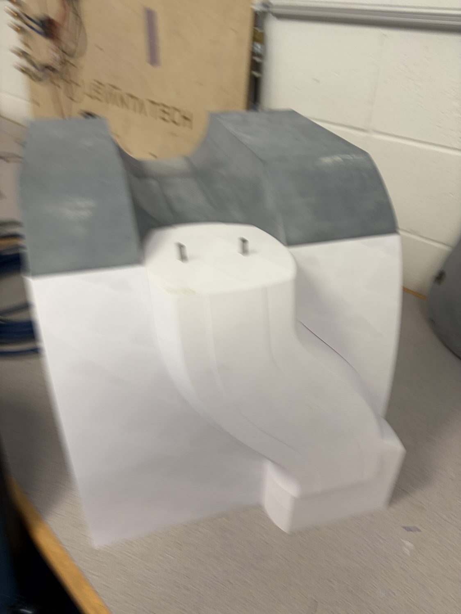
Machined foam plug — the positive everything inherits
{kind=link}
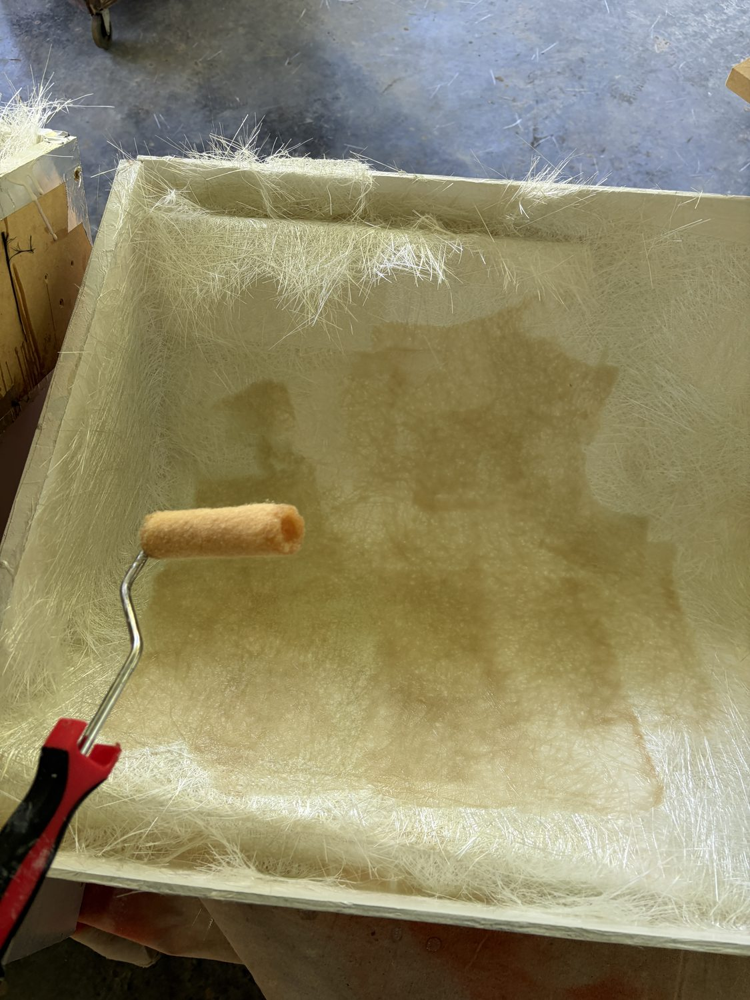
Rolling the mold laminate for consolidation
{kind=link}
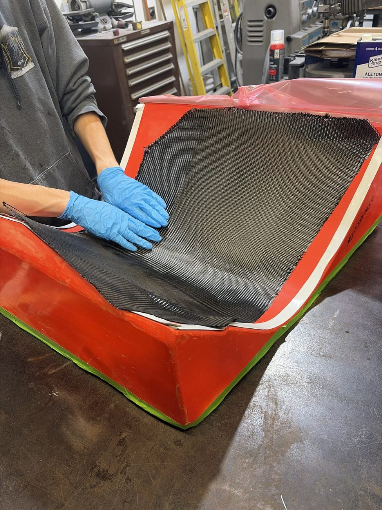
Wet-laying carbon into a female mold
{kind=link}
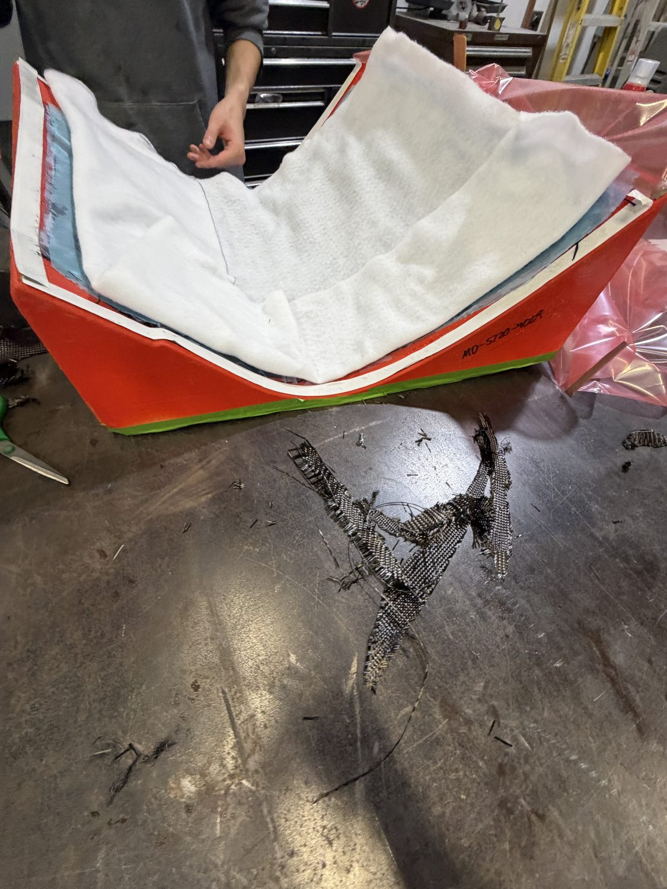
Demold — cured part out of its tool
With a mold in hand the part cycle is fixed: wet layup, vacuum bag, cure, demold, trim. Bagging a three-dimensional part means pleating film into every concave corner — wherever the bag bridges, the laminate underneath simply doesn’t get consolidated.
The bottom skin
The capstone was the vehicle’s full-length carbon bottom skin — the same chain at a scale where nothing can be redone quickly. The plug was primed and faired, then a full-length fiberglass mold was laid up over it and stiffened with wooden ribs so a tool that size wouldn’t flex.
{kind=link}
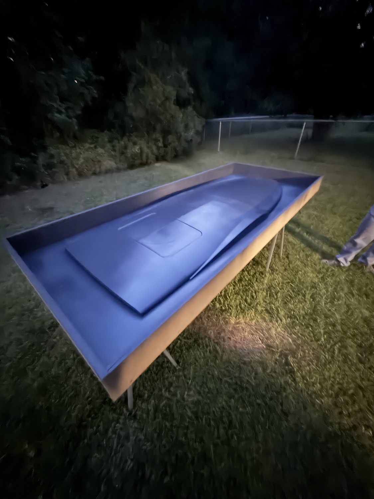
Plug primed and faired, into the night
{kind=link}
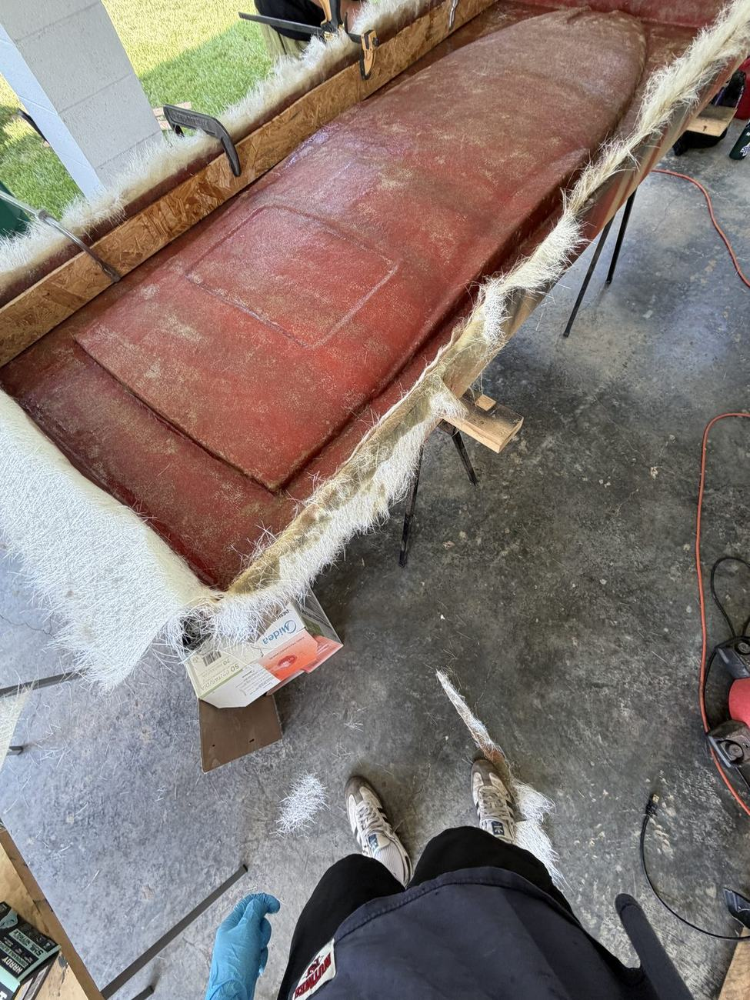
Glassing the mold over the plug
{kind=link}
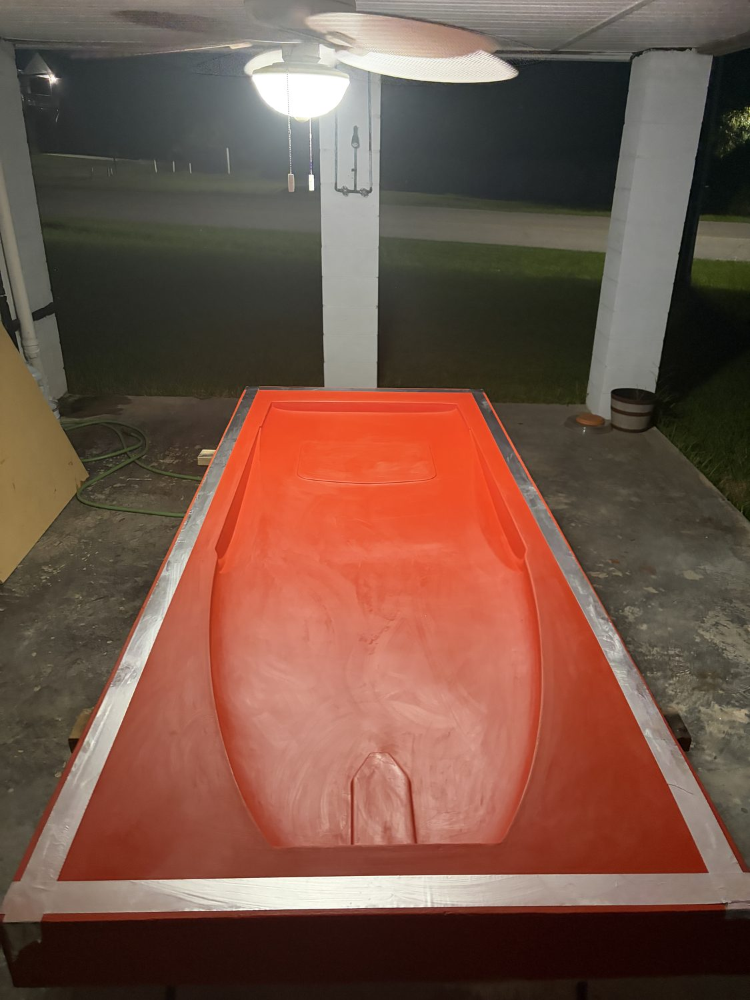
Finished mold, rib-stiffened
The skin itself went down in one shot: every carbon ply wetted out, draped, bagged, and drawn down inside a single working pot life. Layup day started before sunrise — once the resin is mixed the schedule is set by chemistry, so every ply, pleat, and sealant-tape joint had to happen in order, with no chance to stop and think.
{kind=link}
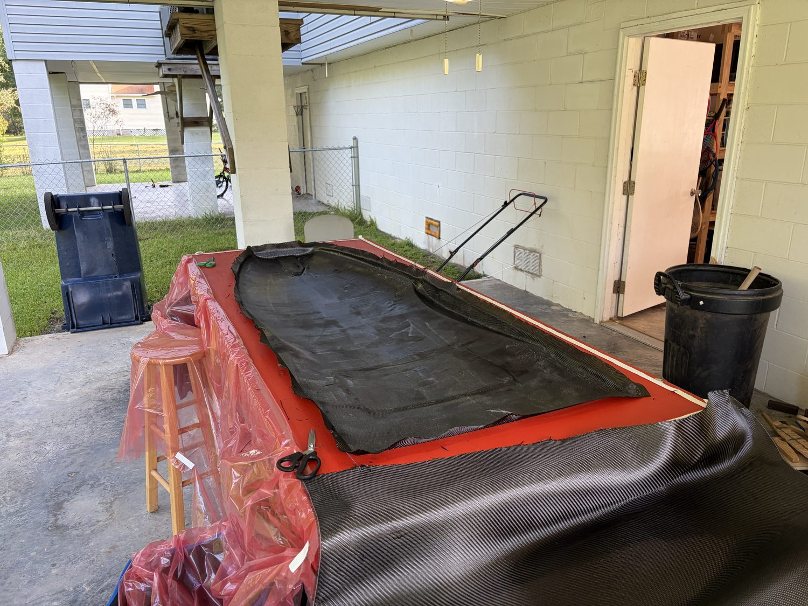
Carbon going into the mold
{kind=link}
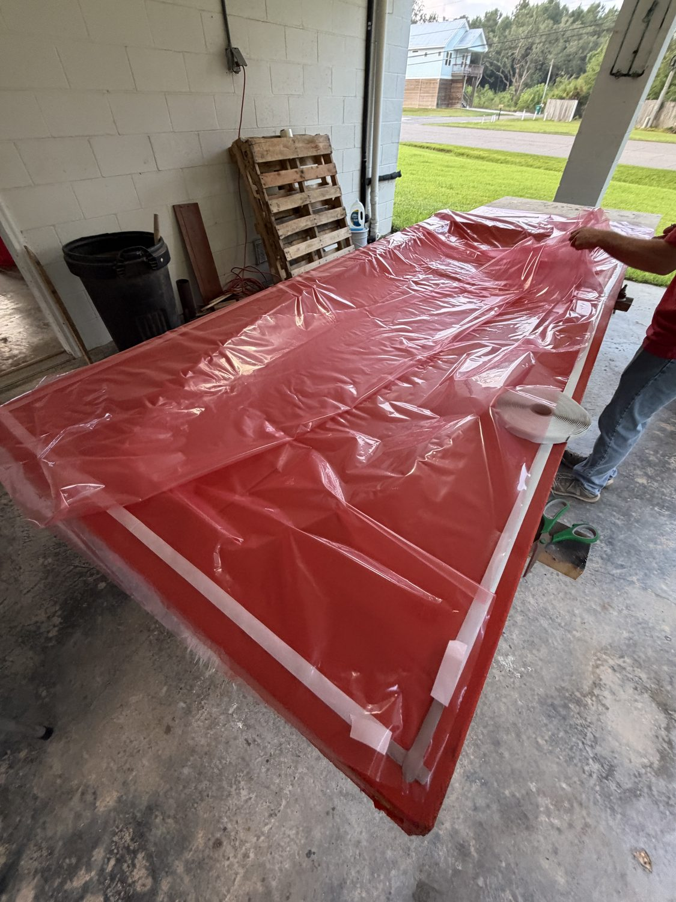
Building the bag: tape, film, pleats
{kind=link}
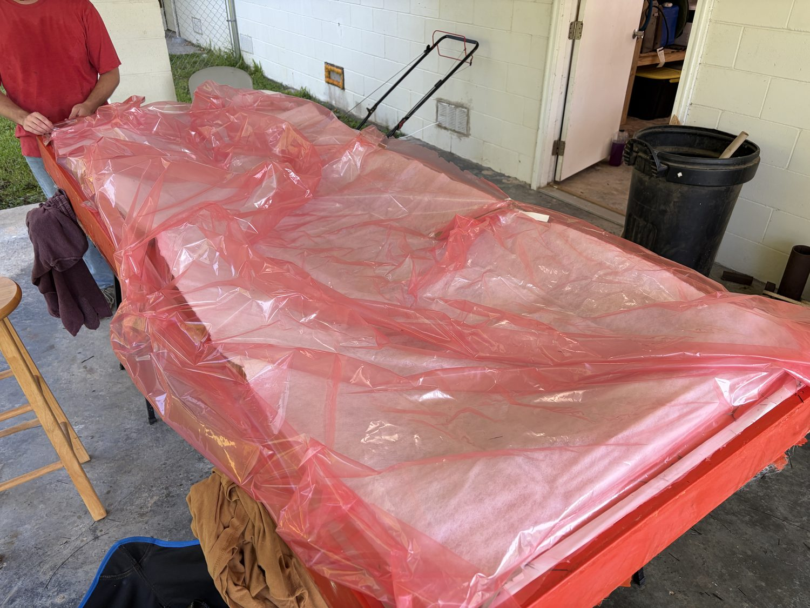
Bag laid on and drawn down
The part was demolded the next morning, trimmed to its net edge, and test-fitted to the hull the same day.
{kind=link}
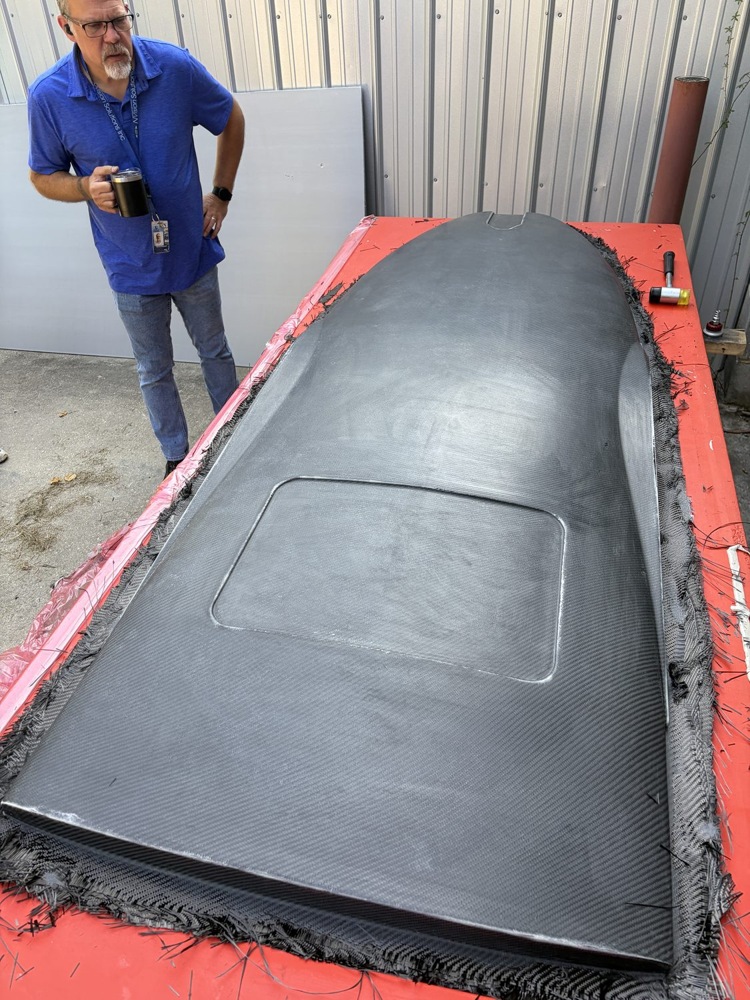
Next morning — cured skin in the open mold
{kind=link}
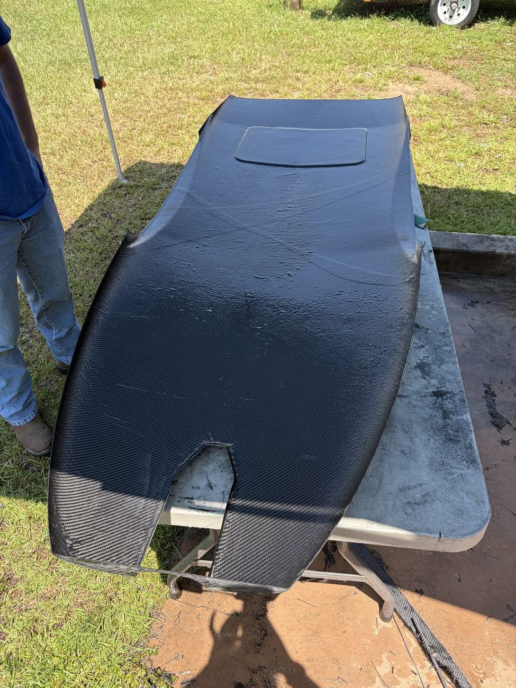
Trimmed to its net edge
Outcomes
- Nine weeks of production composites across the full plug → mold → part chain
- The full-length carbon bottom skin: primed plug to a demolded, hull-fitted part in about eight days
- Multiple foil and strut molds and parts through the complete layup–bag–demold–trim cycle
- The same tooling logic carried straight into my own carbon nosecone the same week — where I learned the corollary the hard way: a 3D-printed mold is not a vacuum barrier, so the film has to be
Scope note: this was hands-on process work — the layup schedules (ply counts, orientations, overlap strategy) were specified by others; I executed them.
The mechanism-design side of the same internship: the retractable keel fin.